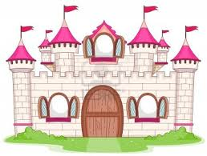

Det var en gång för länge sedan i ett land, som ligger långt borta.
Där bodde en kung och en drottning med sin son.
Kungen och drottningen började bli gamla och ville därför lämna över kronan till sin son prinsen, så han skulle bli landets kung. Det var bara ett problem, prinsen hade ingen fru, så vem skulle då bli landets drottning? Kungen pratade med sin son.
Prinsen lovade då att han skulle rida ut i världen för att leta efter en fru.
Drottningen förmanade då sin son att det måste vara en riktig prinsessa. Det lovade prinsen att tänka på.